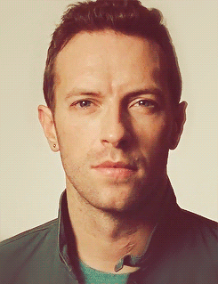
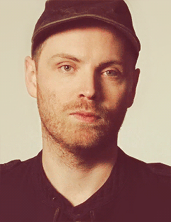
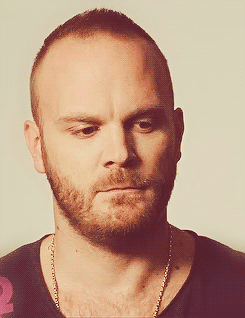

"Everything you want's a dream away
Under this pressure under this weight
We are diamonds taking shape."
Coldplay is an Alternative rock band from Great Britain that was formed in 1996.
The band members include Chris Martin, Jonny Buckland, Guy Berryman, and Will Champion
  